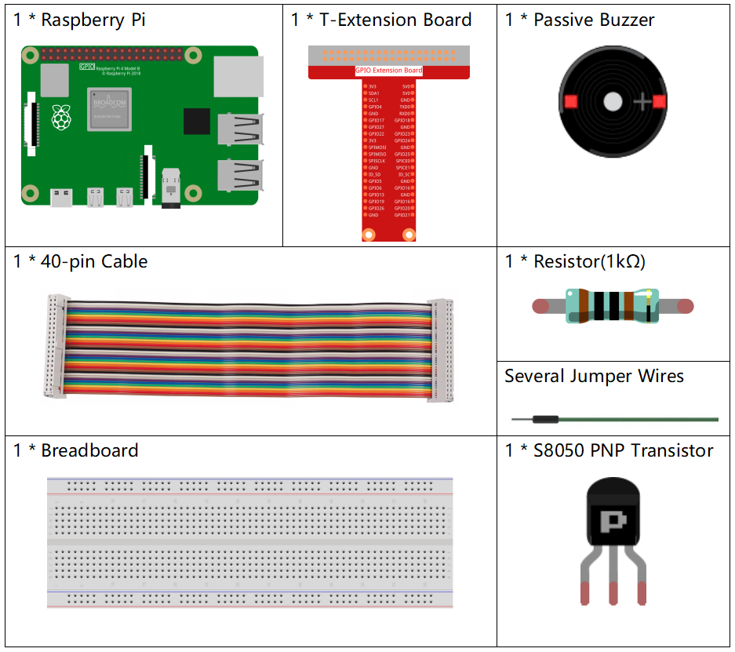

注釈
こんにちは、SunFounderのRaspberry Pi & Arduino & ESP32愛好家コミュニティへようこそ！Facebook上でRaspberry Pi、Arduino、ESP32についてもっと深く掘り下げ、他の愛好家と交流しましょう。
参加する理由は？
エキスパートサポート：コミュニティやチームの助けを借りて、販売後の問題や技術的な課題を解決します。
学び＆共有：ヒントやチュートリアルを交換してスキルを向上させましょう。
独占的なプレビュー：新製品の発表や先行プレビューに早期アクセスしましょう。
特別割引：最新製品の独占割引をお楽しみください。
祭りのプロモーションとギフト：ギフトや祝日のプロモーションに参加しましょう。
👉 私たちと一緒に探索し、創造する準備はできていますか？[ここ]をクリックして今すぐ参加しましょう！
1.2.2 パッシブブザー
はじめに
このプロジェクトでは、パッシブブザーを使用して音楽を演奏する方法を学びます。
必要なコンポーネント
このプロジェクトでは、以下のコンポーネントが必要です。
回路図
この実験では、パッシブブザー、PNPトランジスタ、および1kΩの抵抗器が、トランジスタのベースとGPIOの間に使用されてトランジスタを保護します。
GPIO17に異なる周波数が供給されると、パッシブブザーは異なる音を鳴らします。これにより、ブザーは音楽を演奏します。
T-Board Name |
physical |
BCM |
GPIO17 |
Pin 11 |
17 |

実験手順
ステップ1: 回路を組み立てます（パッシブブザーは裏面に緑の回路基板があります）。
ステップ2: ディレクトリを変更します。
cd ~/davinci-kit-for-raspberry-pi/python-pi5
ステップ3: 実行します。
sudo python3 1.2.2_PassiveBuzzer.py
コードを実行すると、ブザーが音楽を演奏します。
警告
エラー メッセージ RuntimeError: Cannot determine SOC peripheral base address が表示された場合は、 「gpiozero」が動作しない場合。 を参照してください。
コード
注釈
以下のコードは変更/リセット/コピー/実行/停止ができます。ただし、コードを変更する前に davinci-kit-for-raspberry-pi/python-pi5 のようなソースコードのパスに移動する必要があります。コードを変更した後、直接実行して効果を確認できます。
#!/usr/bin/env python3
from gpiozero import TonalBuzzer
from time import sleep
# GPIOピン17に接続されたTonalBuzzerオブジェクトを初期化します
tb = TonalBuzzer(17) # ご使用のセットアップに基づいてこのピン番号を更新します
def play(tune):
"""
ブザーを使用して音楽を演奏します。
:param tune: ノートとその持続時間を表すタプル（ノート、持続時間）のリスト
"""
for note, duration in tune:
print(note) # 現在再生中の音符を出力
tb.play(note) # ブザーで音符を演奏
sleep(float(duration)) # 音符の持続時間待ち
tb.stop() # 曲が終わった後に演奏を停止します
# 音楽チューンをノートと持続時間のシーケンスとして定義します
tune = [('C#4', 0.2), ('D4', 0.2), (None, 0.2),
('Eb4', 0.2), ('E4', 0.2), (None, 0.6),
('F#4', 0.2), ('G4', 0.2), (None, 0.6),
('Eb4', 0.2), ('E4', 0.2), (None, 0.2),
('F#4', 0.2), ('G4', 0.2), (None, 0.2),
('C4', 0.2), ('B4', 0.2), (None, 0.2),
('F#4', 0.2), ('G4', 0.2), (None, 0.2),
('B4', 0.2), ('Bb4', 0.5), (None, 0.6),
('A4', 0.2), ('G4', 0.2), ('E4', 0.2),
('D4', 0.2), ('E4', 0.2)]
try:
play(tune) # 演奏を開始するためにplay関数を実行します
except KeyboardInterrupt:
# キーボード割り込みをスムーズに処理
pass
コードの説明
これらの行はブザーの制御のために
gpiozeroライブラリからTonalBuzzerクラス、待機を作成するためにtimeモジュールからsleep関数をインポートします。#!/usr/bin/env python3 from gpiozero import TonalBuzzer from time import sleep
この行はGPIOピン17に接続された
TonalBuzzerオブジェクトを初期化します。# GPIOピン17に接続されたTonalBuzzerオブジェクトを初期化します tb = TonalBuzzer(17) # お使いのセットアップに基づいてこのピン番号を更新してください
play関数は、音楽のノートとその持続時間を表すタプルのリストを繰り返し処理します。各ノートは指定された持続時間だけ演奏され、曲が終了するとブザーが停止します。def play(tune): """ ブザーを使って音楽を演奏します。 :param tune: ノートとその持続時間を表すタプル（ノート、持続時間）のリスト。 """ for note, duration in tune: print(note) # 現在演奏されているノートを出力 tb.play(note) # ブザーでノートを演奏 sleep(float(duration)) # ノートの持続時間分遅延 tb.stop() # 曲が完了した後に演奏を停止
メロディは音符（周波数）と持続時間（秒）のシーケンスとして定義されています。
# ノートと持続時間（秒）のシーケンスとして音楽のメロディを定義します tune = [('C#4', 0.2), ('D4', 0.2), (None, 0.2), ('Eb4', 0.2), ('E4', 0.2), (None, 0.6), ('F#4', 0.2), ('G4', 0.2), (None, 0.6), ('Eb4', 0.2), ('E4', 0.2), (None, 0.2), ('F#4', 0.2), ('G4', 0.2), (None, 0.2), ('C4', 0.2), ('B4', 0.2), (None, 0.2), ('F#4', 0.2), ('G4', 0.2), (None, 0.2), ('B4', 0.2), ('Bb4', 0.5), (None, 0.6), ('A4', 0.2), ('G4', 0.2), ('E4', 0.2), ('D4', 0.2), ('E4', 0.2)]
play(tune)関数はtryブロック内で呼び出されます。KeyboardInterrupt（Ctrl+Cのような）はプログラムを正常に停止します。try: play(tune) # 曲を演奏を開始するためにplay関数を実行します except KeyboardInterrupt: # Ctrl+Cのようなキーボード割り込みを処理してプログラムをきれいに終了します pass